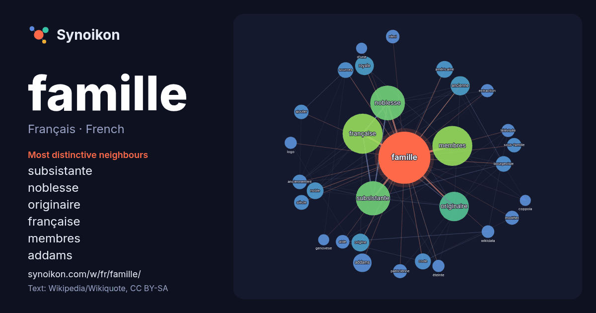

Français · French · popular word
famille
“family” · The words found around it in 1520 instances from French Wikipedia, Wikiquote.

Most distinctive neighbours
- subsistante 96×
- noblesse 83×
- originaire 46×
- française 39×
- membres 30×
- addams 29×
- royale 20×
- bourgeoisie 20×
- noble 19×
- ancienne 18×
- patricienne 17×
- ajouter 17×
- sous-famille 16×
- origine 16×
- rémi 16×
- modifier 16×
- anciennement 15×
- extraction 15×
- code 15×
- sources 14×
× = how many times more often than in general French Wikipedia text.
Most frequent neighbours
- française 131
- membres 131
- noblesse 99
- subsistante 96
- originaire 71
- nom 53
- ancienne 30
- royale 29
- addams 28
- origine 26
- série 25
- film 24
- français 24
- américaine 23
- noble 23
- code 21
- bourgeoisie 20
- sources 20
- siècle 18
- ajouter 17
In context
- articles homonymes, voir Famille (homonymie). « Beaux-parents » redirige ici. Pour le film de 2019, voir Beaux-parents (film). Une famille (latin : familia) Wikipedia snippets · Famille
- Rothschild. La famille Rothschild (prononcé en allemand : [ˈʁoːtʃɪlt] ; en anglais : [ˈɹɒθs.t͡ʃaɪld] ; en français : [ʁɔt.ʃild]) est une famille de la haute Wikipedia snippets · Famille Rothschild
- Pour les autres membres de la famille, voir Famille du Pont de Ligonnès. L'affaire Xavier Dupont de Ligonnès est un quintuple meurtre non élucidé survenu Wikipedia snippets · Affaire Dupont de Ligonnès
- La famille Le Pen est une famille française qui a donné au paysage politique français et européen des parlementaires, majoritairement membres du principal Wikipedia snippets · Famille Le Pen
- Pour les articles homonymes, voir Famille (homonymie). En classification scientifique des espèces, la famille est un taxon qui rassemble les genres ayant Wikipedia snippets · Famille (biologie)
- super-famille Gerroidea Leach, 1815 famille Gerridae Leach, 1815 famille Veliidae Brullé, 1836 famille Hermatobatidae Coutière & Martin, 1901 super-famille Wikipedia snippets · Heteroptera
- successivement députée (2002-2008), secrétaire d'État chargée de la Famille (2008-2009), puis de la Famille et de la Solidarité (2009-2010), et ministre déléguée auprès Wikipedia snippets · Nadine Morano
- membres de la famille Mulliez, œuvre pour les intérêts économiques de cette famille, originaire du département français du Nord. Cette famille est ainsi à Wikipedia snippets · Association familiale Mulliez
More French words
- art
- automne
- carte
- chanson
- chat
- chemin
- cheval
- chien
- climat
- cloche
- cœur
- dieu
- désert
- eau
- forêt
- histoire
- hiver
- horloge
- jardin
- langue
- miel
- miroir
- monnaie
- montagne
- mort
- mère
- nature
- nourriture
- ombre
- pain
- pluie
- pont
- pouvoir
- printemps
- santé
- science
- sel
- silence
- temps
- tempête
- thé
- train
- travail
- trésor
- vie
- ville
- vérité
- étoile
- île
Precomputed on 2026-10-09 with default settings (±5 words, medium corpus). The interactive map can refresh it with live data.